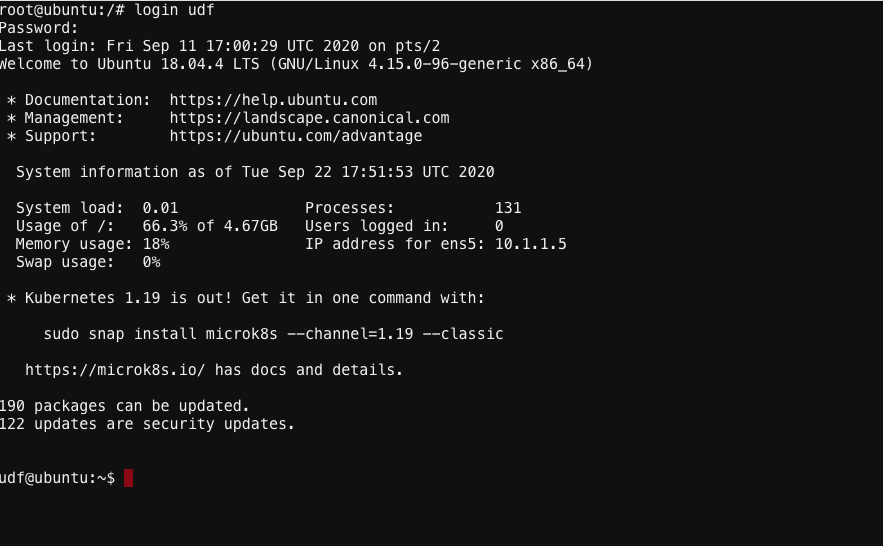

Lesson1 –> Access UDF¶
Agenda
Search for Blueprint BIG-IP TGW with Consul Connect
Click on the Start button Once started click Details
Click on Components TAB & then click on Ubuntu –> Access –> WEB SHELL
At the prompt enter
` login udf `& Password` udf `

After logging in udf change directory
`cd consul-tg-env/